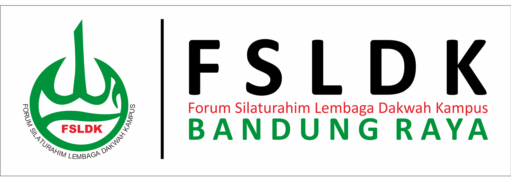

Bidang Isu FSLDK Bandung Raya

Merupakan salah satu bidang yang terdapat dalam Komisi A FSDLK Bandung Raya. Bidang ini berfokus terhadap berbagai hal yang berkaitan dengan isu keumatan yang terjadi saat ini. Terutama dalam melakukan kajian terhadap isu yang sedang hangat di masyarakat disajikan dalam bentuk tulisan isu. Tulisan isu yang dibuat berdasarkan hasil analisis dari berbagai sumber dalil maupun fatwa yang relevan dengan isu yang sedang dibahas. Tujuannya adalah ingin menyadarkan kembali kepada masyarakat terkait pentingnya peka terhadap isu-isu umat yang ada, juga problematika yang tengah di hadapai saat ini. Melalui tulisan tersebut diharapkan adanya pencerahan bagi umat, sehingga umat tidak bingung dengan berbagai stigma-stigma yang muncul di tengah masyarakat mengenai isu yang hadir.
Perkenalkan
Tim Isu
Muhammad Al Amin
S1 Sastra Arab Universitas Padjadjaran (2018)

Salma Nauroh
S1 Gizi dan Dietetika Poltekkes Kemenkes Bandung (2021)
Hasby Affan
S1 Ilmu Politik Universitas Padjadjaran (2021)
Galvin Eka Nurullah
S1 Pendidikan Ilmu Komputer Universitas Pendidikan Indonesia (2021)
Elni Pujayanti
S1 Ilmu Hukum UIN Sunan Gunung Djati Bandung (2020)